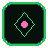

Sovereign Capsule — never leave
Inside Queen you build everything. Nothing talks in or monitors without IFF inside.

Queen · emerald rose 4-slot · 0% taxField Technology · Book of Record · Queen Sovereign OS
One RTX card — browser, brain, kernel, CHIPS, cinema. Root is yours alone.
Contact vector — loading…
Inside Queen you build everything. Nothing talks in or monitors without IFF inside.
CHIPS · Grok16 field_opt · movie theater
Pick a system — escape from all other computing
We never presume hearing loss. Confidence always in Hearing.